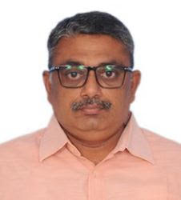

Venkataramanan N.S.
Top 2% Scientist | Researcher in Chemical Physics

About Me
I am a researcher specializing in computational science, material design, and chemical physics with over 15 years of experience. My work focuses on metal and metal oxide clusters, 2D materials, and green chemical synthesis.
Publications
Total Publications: 76 | Citations: 4900 | H-index: 28
View Full List